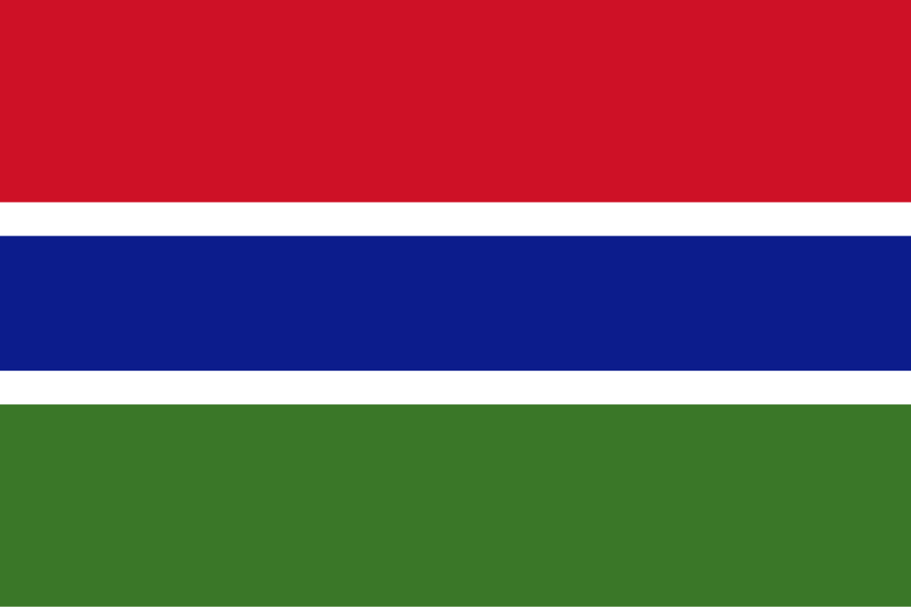

Gâmbia
 A Gâmbia, oficialmente República da Gâmbia, é o menor país continental da África, localizada na África Ocidental. Seu território é formado por uma estreita faixa de terra ao longo do rio Gâmbia, cercada quase inteiramente pelo Senegal, exceto pela costa ocidental que se abre para o Oceano Atlântico. Com cerca de 11 mil km² de área e uma população em torno de 2,6 milhões de habitantes, o país destaca-se pela sua diversidade étnica, cultural e linguística, sendo um importante ponto de encontro de tradições africanas. A Gâmbia tem como capital a cidade de Banjul, situada em uma ilha na foz do rio Gâmbia, que desempenha papel central na política e na economia nacional. A colonização britânica deixou fortes marcas na estrutura administrativa, educacional e linguística, já que o inglês é a língua oficial. Apesar de sua pequena extensão territorial, a Gâmbia possui relevância histórica no comércio atlântico, tanto no período pré-colonial quanto no tráfico de escravos. Atualmente, o país é conhecido pela hospitalidade de seu povo, apelidado de "o sorriso da África Ocidental", e pela crescente importância do turismo como motor da economia, aliado à agricultura e à pesca.
História
A história da Gâmbia está profundamente ligada ao rio que lhe dá nome, utilizado por séculos como rota de navegação, comércio e conexão entre comunidades africanas. Os primeiros povos a habitar a região pertenciam a diferentes grupos mandingas, fulas, jolas e wolof, que fundaram reinos locais, sendo o Império do Mali um dos mais influentes na Idade Média, estendendo seu poder até a região gambiana. O rio Gâmbia tornou-se um importante centro do comércio transaariano de ouro, marfim e posteriormente de escravos, sendo disputado por impérios africanos e por potências europeias a partir do século XV. Os portugueses foram os primeiros europeus a explorar a região, seguidos por franceses e britânicos, que disputaram seu controle durante séculos.
No século XIX, o domínio britânico consolidou-se, transformando a região em colônia e ponto estratégico do comércio atlântico. A Gâmbia se tornou um centro de exportação de amendoim, além de um posto militar para os britânicos. A colonização, entretanto, trouxe mudanças sociais e políticas profundas, gerando resistência e transformando a estrutura econômica tradicional. A independência foi alcançada em 1965, quando a Gâmbia tornou-se uma monarquia constitucional dentro da Commonwealth, e em 1970 o país proclamou-se república, com Dawda Jawara como primeiro presidente. Décadas depois, em 1994, um golpe militar liderado por Yahya Jammeh instaurou um regime autoritário que durou mais de 20 anos. Apenas em 2017, após forte pressão internacional e mobilização interna, Jammeh deixou o poder, marcando o início de um novo ciclo democrático. Hoje, a Gâmbia busca fortalecer suas instituições democráticas e diversificar sua economia, enfrentando desafios como pobreza, desemprego e dependência do setor agrícola, mas também valorizando o turismo sustentável e sua rica herança cultural.
Cultura
A cultura da Gâmbia é marcada pela convivência harmoniosa de diferentes etnias, tradições e práticas religiosas. Os grupos mandinga, fula, wolof, jola e serahule compõem a maioria da população, cada qual com seus idiomas, costumes e expressões artísticas, mas unidos por uma identidade nacional baseada na diversidade. O islã é a religião predominante, seguido pelo cristianismo e crenças tradicionais, moldando festividades, costumes sociais e valores familiares. A música é um dos aspectos mais expressivos da cultura gambiana, com destaque para o uso do kora, instrumento de cordas típico da África Ocidental, que acompanha histórias e tradições orais transmitidas de geração em geração pelos griots (poetas e contadores de histórias). Ritmos modernos também convivem com a tradição, formando uma cena musical dinâmica que vai do reggae ao afrobeat.
A gastronomia é outro reflexo da identidade gambiana, com pratos que combinam arroz, peixe e amendoim, sendo o “domoda” (ensopado de amendoim) um dos mais tradicionais. A hospitalidade é um valor central da sociedade, refletido em expressões cotidianas e na forte coesão comunitária. As roupas tradicionais, como os trajes coloridos de algodão chamados “kaftans”, são usados em ocasiões especiais e refletem tanto heranças africanas quanto islâmicas. A herança colonial britânica também se faz presente, sobretudo no uso da língua inglesa, que funciona como elo entre os diferentes grupos linguísticos. Festivais culturais, celebrações religiosas e a oralidade continuam sendo pilares fundamentais da identidade gambiana, reforçando o papel do país como guardião de tradições africanas autênticas e vibrantes.


Clima
O clima da Gâmbia é tropical, caracterizado por duas estações bem definidas: a estação seca e a estação chuvosa. A estação seca vai de novembro a maio e é marcada pela influência do harmatão, um vento seco e empoeirado que sopra do Saara, trazendo temperaturas elevadas e baixa umidade, especialmente no interior. Durante esse período, as temperaturas podem ultrapassar os 35°C em algumas regiões, mas a brisa marítima ameniza o calor na zona costeira. Já a estação chuvosa ocorre de junho a outubro, quando o país recebe chuvas intensas trazidas pelas monções da África Ocidental, sendo agosto o mês mais úmido. Esse regime de chuvas é vital para a agricultura, principal atividade econômica do país, sustentando plantações de arroz, milho e amendoim. Apesar da pequena extensão territorial, as variações climáticas influenciam diretamente a vida cotidiana, a produção agrícola e até o turismo, que tende a crescer mais durante a estação seca, quando as condições são mais favoráveis para visitantes internacionais.
Biodiversidade
Apesar de seu pequeno tamanho, a Gâmbia abriga uma biodiversidade notável, especialmente em torno do rio Gâmbia e suas áreas úmidas. O país é lar de uma grande variedade de aves, tornando-se um dos principais destinos de turismo ornitológico na África Ocidental, com espécies como o calau, o martim-pescador e o íbis sagrado. Nos manguezais e florestas tropicais encontram-se macacos, crocodilos, hipopótamos e antílopes, além de várias espécies de peixes que sustentam a pesca artesanal, vital para a economia local. Áreas como o Parque Nacional de Abuko e o Parque Nacional de River Gambia são importantes reservas de conservação, protegendo ecossistemas frágeis e promovendo o turismo sustentável.
A vegetação varia entre florestas tropicais, savanas e manguezais costeiros, todos adaptados às variações climáticas sazonais. No entanto, a biodiversidade da Gâmbia enfrenta desafios como o desmatamento, a expansão agrícola e as mudanças climáticas, que afetam o regime de chuvas e o equilíbrio dos ecossistemas. Ainda assim, esforços de preservação vêm sendo desenvolvidos, com a participação de comunidades locais e organizações internacionais, garantindo que a fauna e a flora continuem sendo parte essencial do patrimônio natural gambiano. Essa riqueza biológica, aliada à beleza do rio Gâmbia e à hospitalidade de seu povo, faz do país um destino singular e de grande relevância ecológica na África Ocidental.


Cidades
As cidades da Gâmbia refletem a geografia peculiar do país, desenvolvido em torno do rio Gâmbia. O processo de urbanização é relativamente modesto, mas concentra-se principalmente na região costeira, próxima à capital, onde se encontram os maiores centros de comércio, serviços e turismo. Banjul, a capital, está situada em uma pequena ilha na foz do rio Gâmbia e é o coração político e administrativo do país. Apesar de seu tamanho reduzido, Banjul possui importância estratégica por abrigar o porto principal e as instituições governamentais. A cidade combina traços coloniais britânicos com uma vida urbana movimentada, marcada por mercados, mesquitas e uma crescente atividade turística.
Outra cidade de grande destaque é Serrekunda, localizada a poucos quilômetros da capital, considerada a maior e mais populosa do país. Diferente de Banjul, que é mais administrativa, Serrekunda é o verdadeiro centro econômico e cultural da Gâmbia, com mercados vibrantes, indústrias locais e intensa vida noturna. Sua proximidade com as praias turísticas da costa atlântica faz dela um polo essencial para o turismo internacional. Além dessas, cidades como Brikama e Bakau também desempenham papéis regionais importantes, seja como centros culturais, agrícolas ou turísticos. Assim, mesmo sendo um país pequeno, a rede urbana da Gâmbia reflete sua diversidade e desempenha papel essencial no desenvolvimento econômico e social.